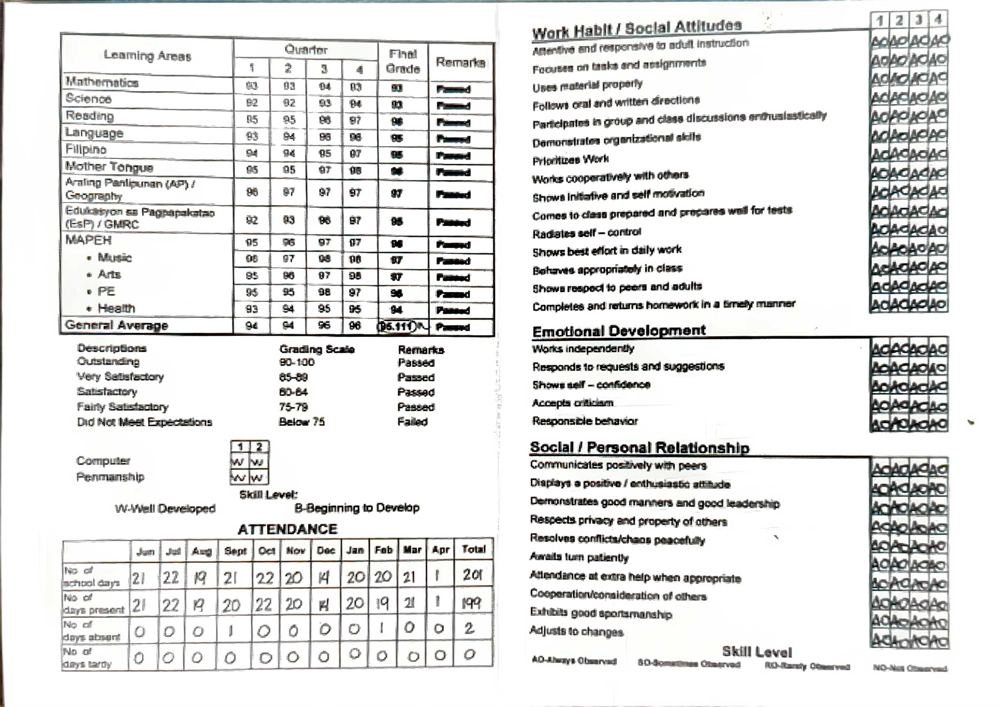

<achievements />
My Achievements
Awards, grades, and activities, each with its supporting proof. Click any picture to enlarge it.

San Jose City National High School
Senior High School · San Jose City, Nueva Ecija


San Jose City National High School
Junior High School
Bettbien Montessori
Elementary